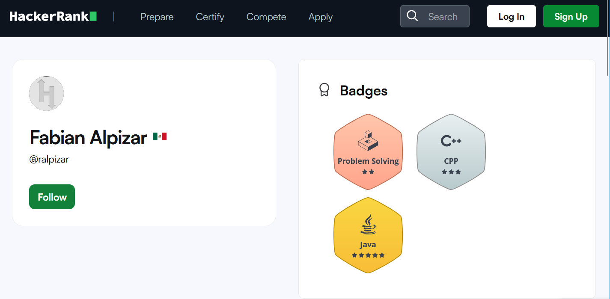

Educación
IPN Unidad Profesional Interdisciplinaria de Ingeniería y Ciencias Sociales y
Administrativas UPIICSA
2016-2022
Ingeniería en informática (Titulo en tramite)
Experiencia
Softtek Servicios y Tecnología 2022-2024
Desarrollador Java
- Responsabilidades
- Mantenimiento correctivo de aplicaciones Java Server Faces
- Atención de incidencias
- Generación de scripts SQL
- Actualización de elementos deprecados
Freelance 2021-2022
- Responsabilidades
- Análisis de requerimientos
- Diseño de aplicación Java
- Construcción de la solución
Habilidades
- Java Programación
- Microsoft Azure Manejo de recursos en la nube
- JavaFX, JSF y JSP Desarrollo de interfaces gráficas
- SQL Manejo de scripts para bases de datos relacionales
- Azure Cosmos DB Gestión de bases de datos NoSQL
- Conocimientos básicos en lenguajes de programación como JavaScript, Python, C++ y Kotlin
- Experiencia en desarrollo de aplicaciones Android con Kotlin y Java
- Control de versiones con Git y Subversion
- Manejo de frameworks como Spring, Spring Boot y J2EE
- Implementación y uso de Docker para la contenedorización de aplicaciones
Certificaciones
- Azure AZ-900 Azure Fundamentals
Idioma
- Inglés Avanzado
- Español Nativo
Proyectos propios
Hackerrank

Uso la plataforma de Hackerrank para mejorar mis habilidades de programación y resolver problemas en el
lenguaje de programación Java.
Tengo la certificación de Java (Basic) en la misma plataforma.
MiniProyectos
Este es un simple cronometro, para hacer mis timesheets necesitaba un cronometro online que soportara multiples cronometros.
Se le pueden poner nombres a los cronometros.
Mantener pulsado clic en restart para reiniciar el cronometro.
Un número determinado del bloques caen del cielo.
¿Llegarán a formar una torre que llegue al cielo o fallarán en el intento?